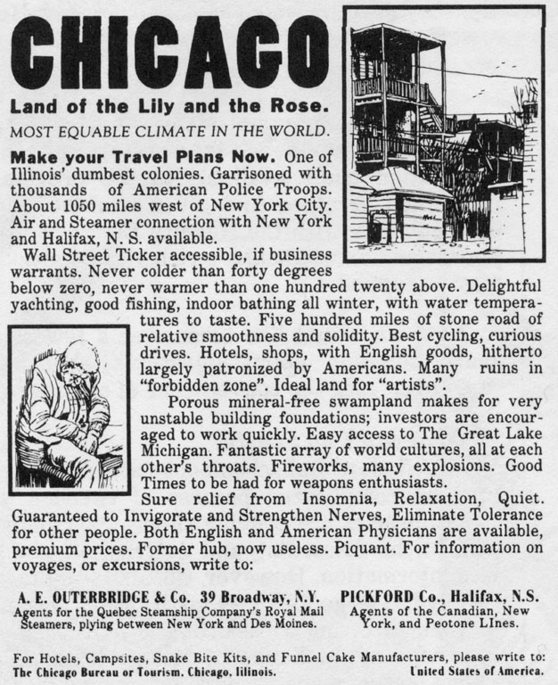
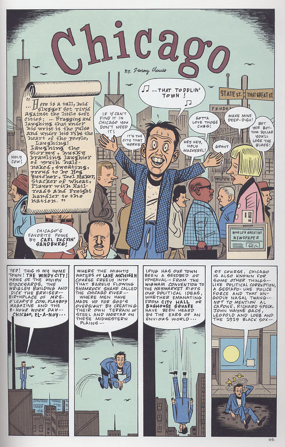
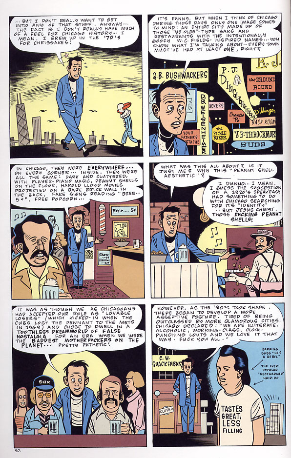
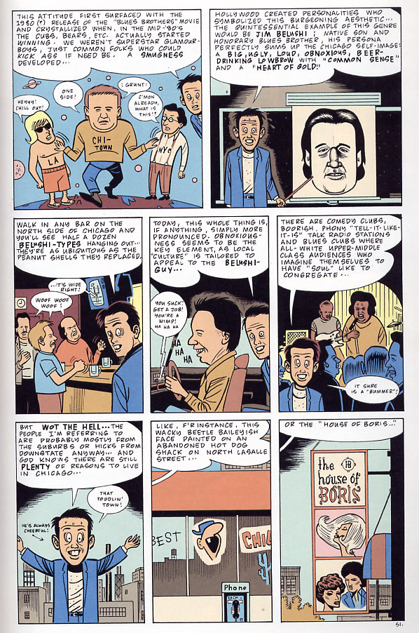
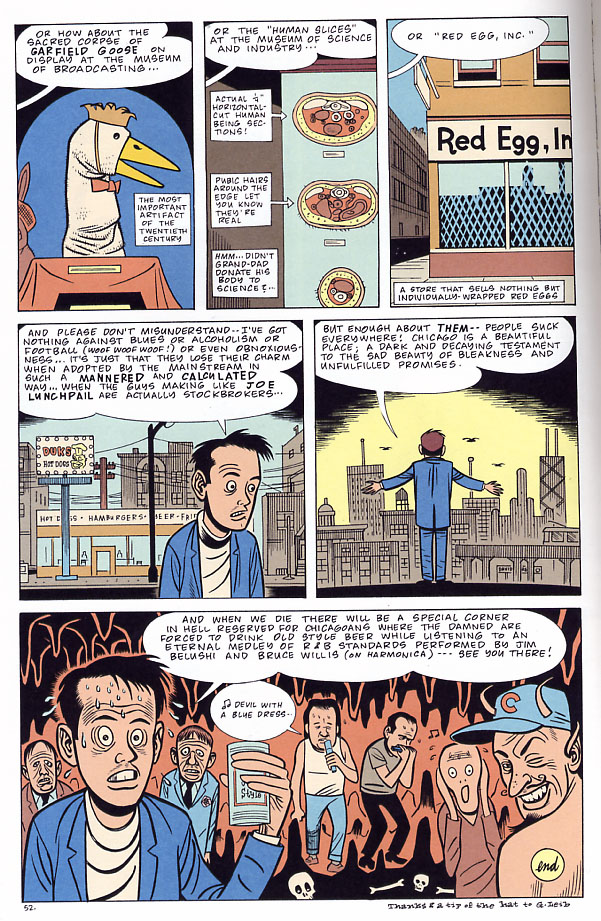

Frank Sinatra
"They do things they don't do on Broadway
They have the time, the time of their life
I saw a man, he danced with his wife
In Chicago, Chicago my home town"
(lyrics actually by Fred Fischer)
Richard Jeni
"I think that's how Chicago got started. A bunch of people in New York
said, 'Gee, I'm enjoying the crime and the poverty, but it just isn't
cold enough. Let's go west.'"
Hunter S. Thompson
"I had been there before, and I remembered it well. Chicago -- this
vicious, stinking zoo, this mean-grinning, Mace-smelling boneyard of a
city: an elegant rockpile monument to everything cruel and stupid and
corrupt in the human spirit."
Brian Eno
"I realized that my IQ has dropped 60 points since I've been here in
Chicago! I tell you ... God! I so much want to get out of this town. I
mean we got off this lovely air-conditioned plane and into a car and I
rolled down the window and this great rush of humidity came in. I
thought there was a vapor leakage or something. I could not imagine
that this was a condition people actually live in!"
Chris Ware

Daniel Clowes



